www.spetsialist-mx.ru
САЙТ О ПК "СПЕЦИАЛИСТ" И ЕГО КЛОНАХ
| |
|
| ГЛАВНАЯ | |
| ЛИК | |
| ЛИНЁВСКИЙ | |
| СПЕЦИАЛИСТ-М | |
| СЯБР | |
| УЦА | |
| ЭКСПРЕСС | |
| ЭРИК | |
| СПЕЦИАЛИСТ МХ | |
| ДРУГИЕ | |
| ССЫЛКИ | |
| ОБРАТНАЯ СВЯЗЬ |
ДРУГИЕ КЛОНЫ ПК "СПЕЦИАЛИСТ"
"Сэтик". Промышленный вариант "Специалиста". Информация ищется. Ниже представлены фотографии в корпусе, блока питания и печатной платы.
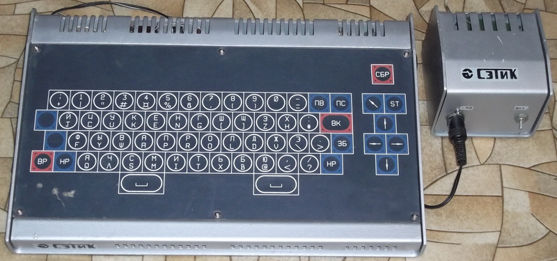
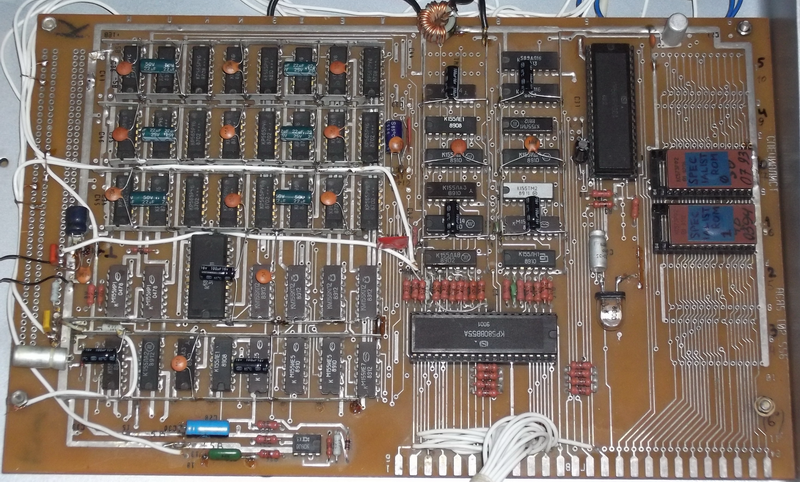
"Eureka". Изготавливался в Литве. Имеется его описание на сайте, руководство по эксплуатации. Коды считанной прошивки. Информация предоставлена Protom'ом.
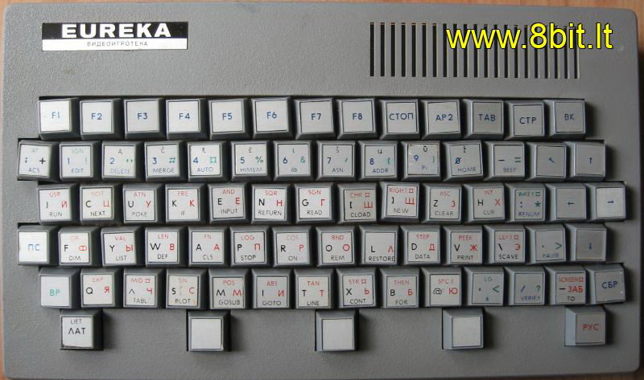
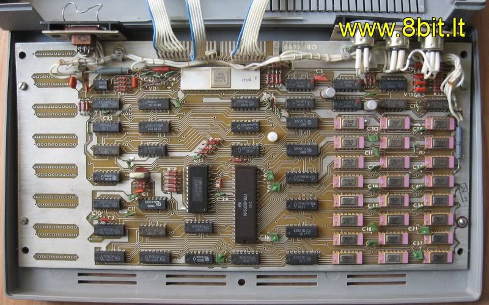
"Эховский". Выпускался на харьковском радиозаводе "Эхо". На данный момент имеется схема (кликтабельна), рисунок печатной платы и её фотография. Отличительная особенность - на плате есть место для одной микросхемы ПЗУ, но над платой на стойках установлена монтажная плата с пятью панельками под К573РФ2. ОЗУ - 64 кБайт (8 штук К565РУ5). Данные фотографии схемы и монтажки любезно предоставил пользователь форума zx.pk.ru Sergey Erokhin.
{kind=link}
{kind=link}
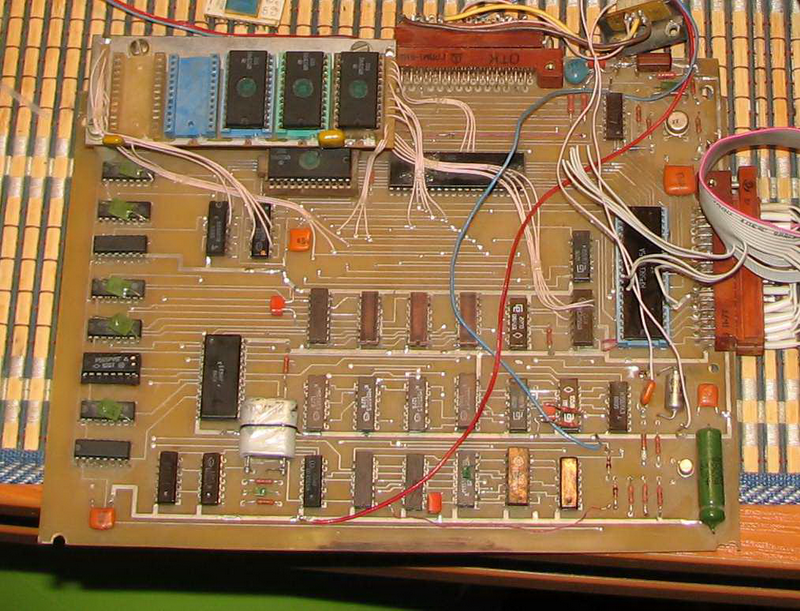
Ещё один клон Специалиста в форм-факторе платы РК-86. Данную фотографию любезно предоставил пользователь форума zx.pk.ru val_dp.
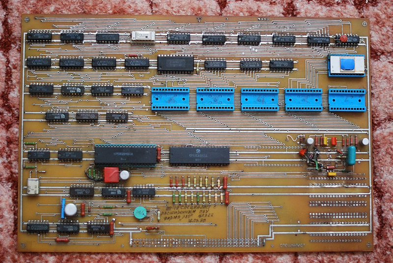
"Радуга". Разработан в Омском авиационном техникуме в 1988 году. Создан на базе ПК "Специалист", но имел расширенные графические, звуковые возможности, особенности архитектуры MSX. Выпускался с 1988 по 1992 года. В качестве звуковой системы использовался упрощенный клон микросхемы General Instruments AY-3-8910, имевший три канала звукового генератора с управлением громкостью и один канал управляемого генератора шума. Графическая система была расширена оригинальным способом: теневая страница 16 кБайт памяти хранила информацию о цвете. На каждые 8 бит монохромного графического буфера приходился один байт цветовой памяти, определявший цвета фона и изображения (по 16 цветов). На выходе двухпортовая память палитры. Возможность доступа к памяти цвета было обеспечена специальным регистром. Процессор устанавливал цвет в регистре, и впоследствии данный цвет применялся ко всем байтам графики, которые изменял процессор. При чтении из видеопамяти информация о цвете считываласть в регистр цвета автоматически. Этот механизм позволял копировать фрагменты графического буфера вместе с цветом, без затрат времени на копирование цветовой информации. Как известно, буфер видеопамяти у Специалиста имел объём 12 кБайт. Оставшиеся 4 кБайт в Радуге использовались как память для цветных шрифтов. Таким образом, обладая расширенными цветовыми возможностями, компьютер работал со скоростью оригинального компьютера Специалист. Написано ПО в том числе и обучающие программы. ПЗУ переделано из - за этого не полная совместимость с оригинальным Специалистом.
"Дон". Имеется полное руководство по эксплуатации в формате DJVU. Вот фотографии от пользователя форума zx.pk.ru dr. Titus корпуса компьютера, вид на клавиатуру. А пользователь rw6hrm предоставил фото внутри компьютера.
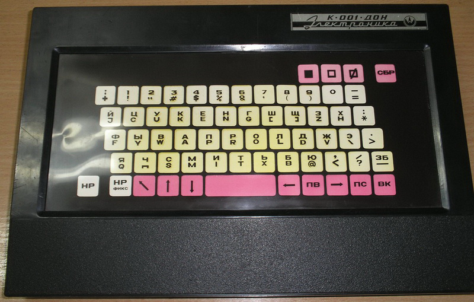
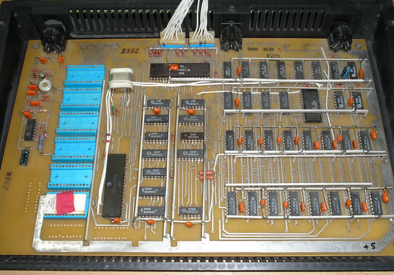
"Квант-001". Не путать с клоном Спектрума. Есть отсканированная инструкция, схема и образ ПЗУ. Фотографии и файлы предоставлены Mx_serg'ом и OlegC 'ом.
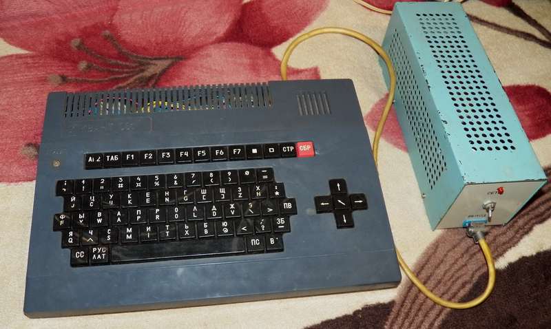
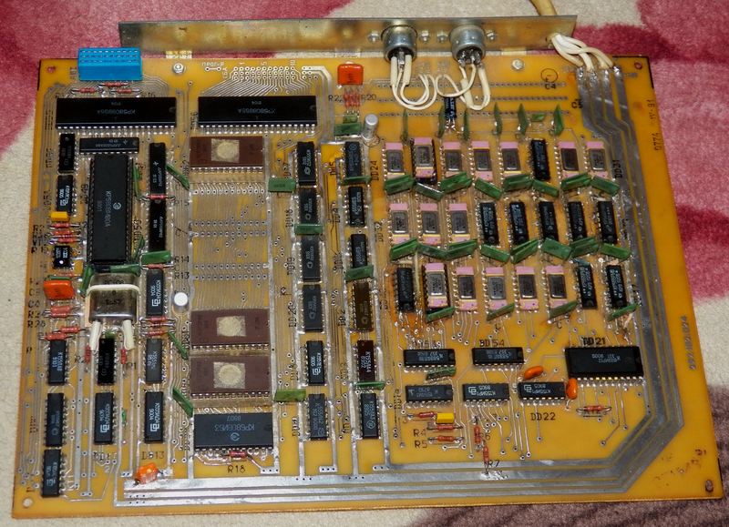
"Спутник". На данный момент информация отсутствует.
"Leda ПК-04" или "Учебно-дисплейный класс". Производился на Украине. Представленны фотографии главного пользовательского компьютеров. Данные фотографии любезно предоставили пользователи BYTEMAN и Vinxru.
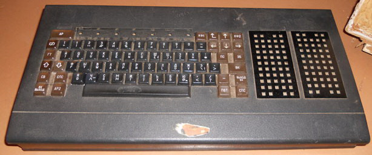
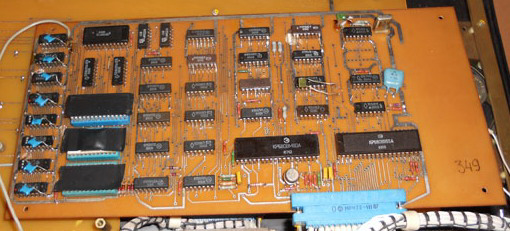
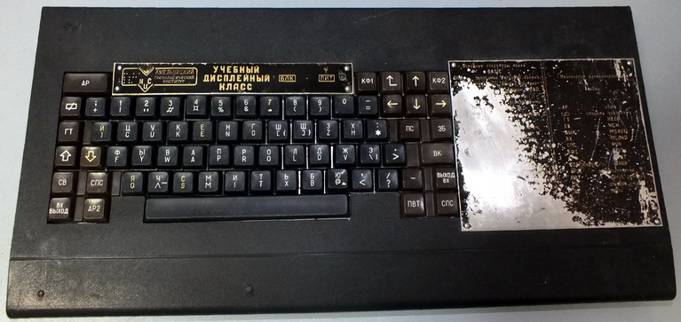
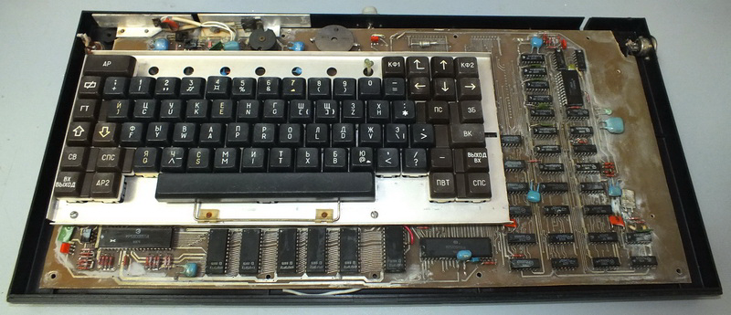
"Юнга". 1988 г. Имеются фотографии, инструкция со схемой и прошивка ПЗУ.
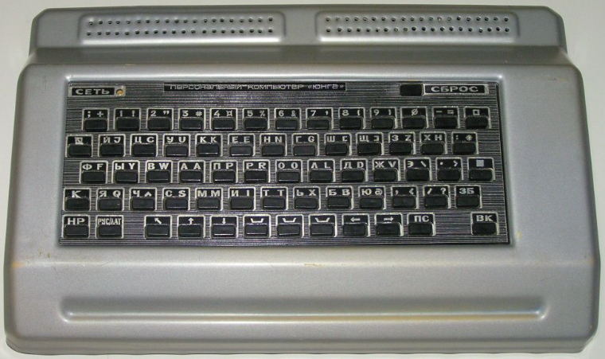
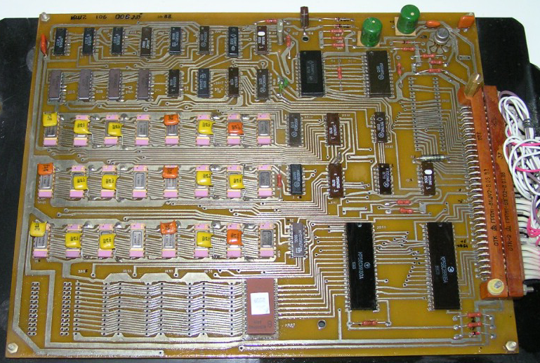
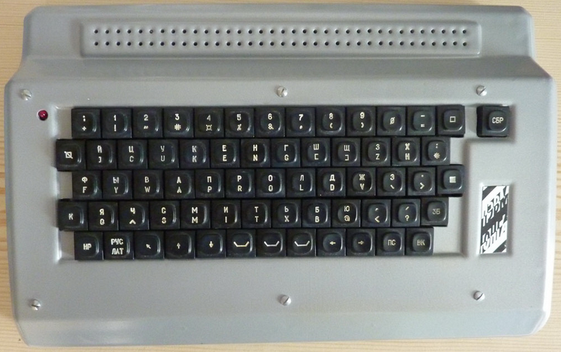
"Пионер". 1993 г. Имеется прошивка ПЗУ, фотографии и документация. Vinxru запустил Пионер и снял этот процесс на видео, отсканировал руководство по эксплуатации. Фотографии также предоставленны Vinxru. Замечано одно отличие от всех Специалистов - несовместимая раскладка клавиатуры.
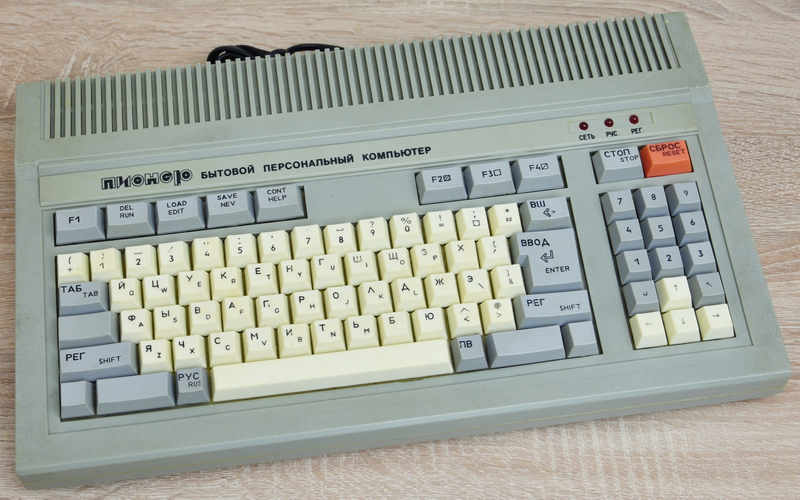
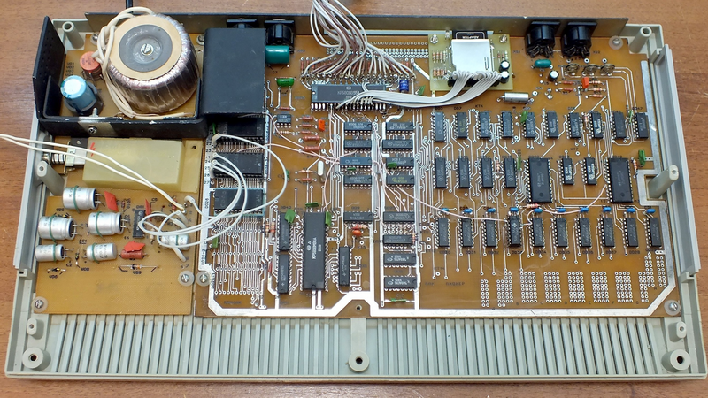
"Полёт". Назван мною так, потому что нет заводского названия. Производился на Челябинском радиозавод (ПО "Полёт") в 1989-1990 гг. Отличается он от других клонов частичным исполнением на планарных микросхемах. Имеется также схема и рисунок монтажной схемы.
{kind=link}
{kind=link}
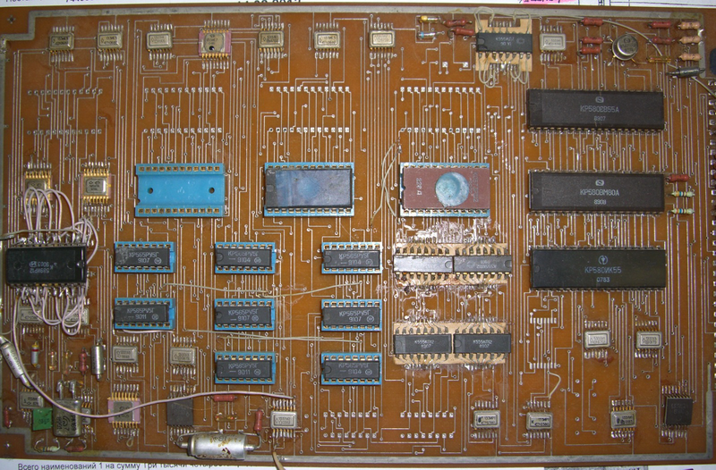
"Анаконда" - учебный вычислительный комплекс, производился в 1989 г., комплектовался контроллером дисковода. В архиве находятся конфигурационный файл для эмуллятора и прошивка под данный клон.
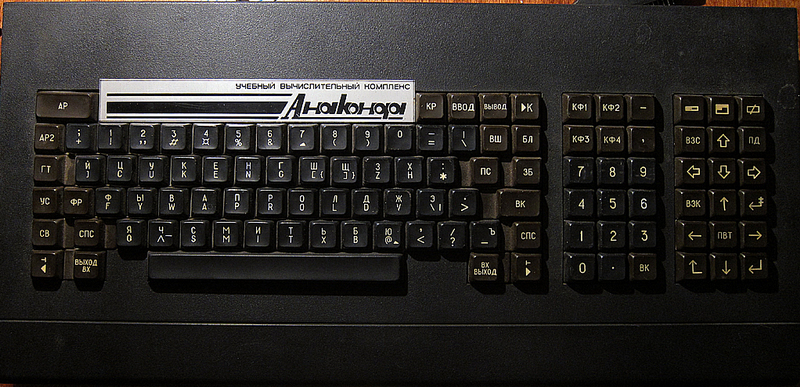
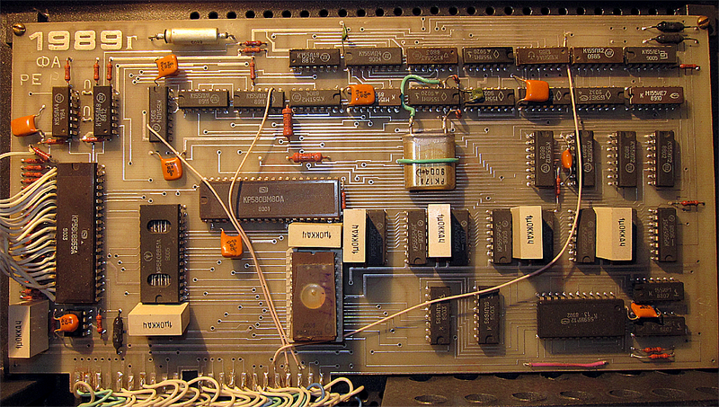
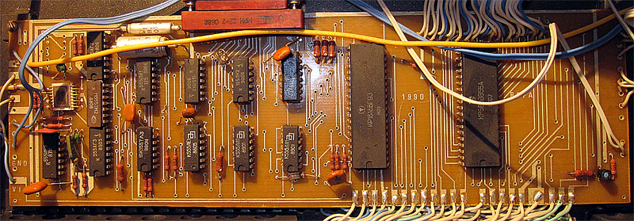
"Темп". Представлен фотографиями, которые предоставил пользователь форума zx.pk.ru alexsan.
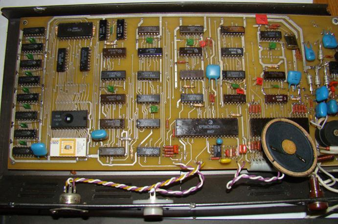
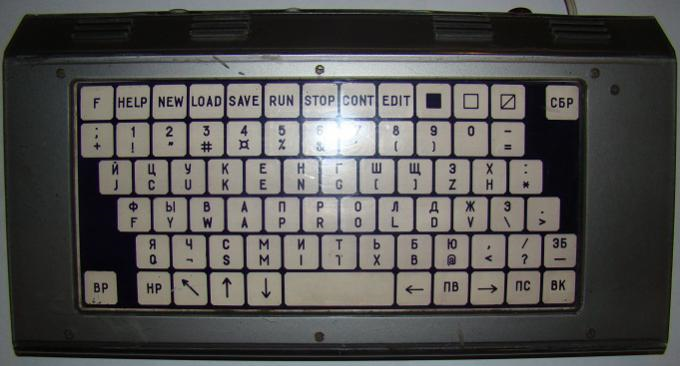
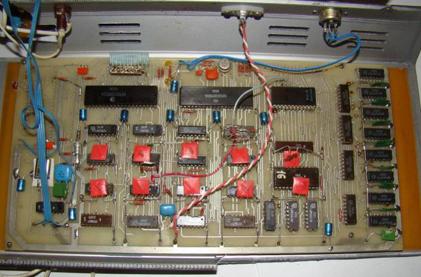
"Микрон-2". Клон изготавливали в городе Дегтярске, Свердловской области. Фотографии и прошивки клона предоставил пользователь под ником Kanzler.
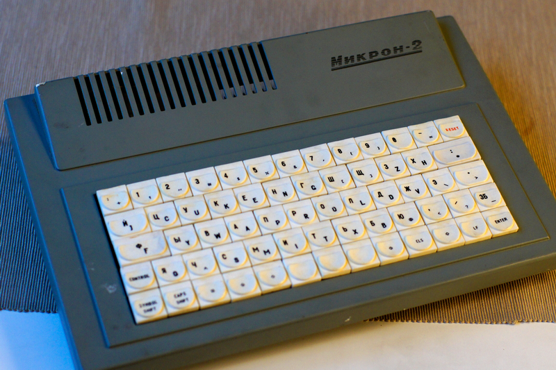
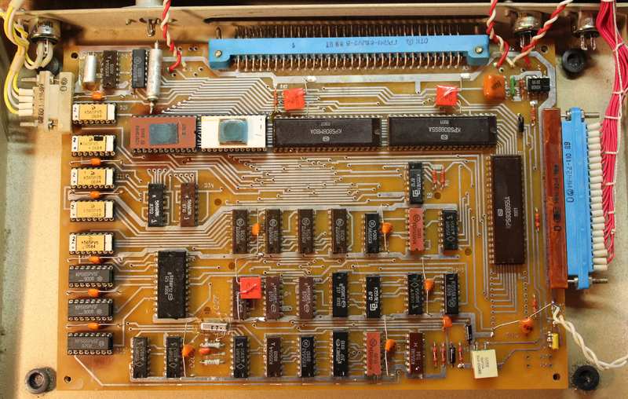
"Харьковский". Клон изготавливали в конце 80 - х годов прошлого века в Харькове, Украинской ССР. Фотографию и прошивки клона предоставил пользователь под ником val_dp.
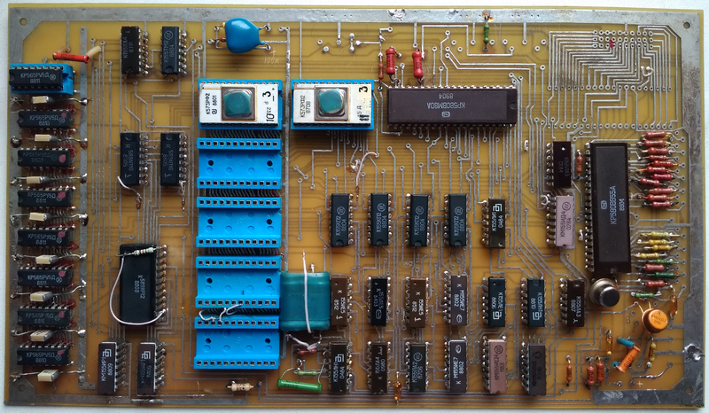